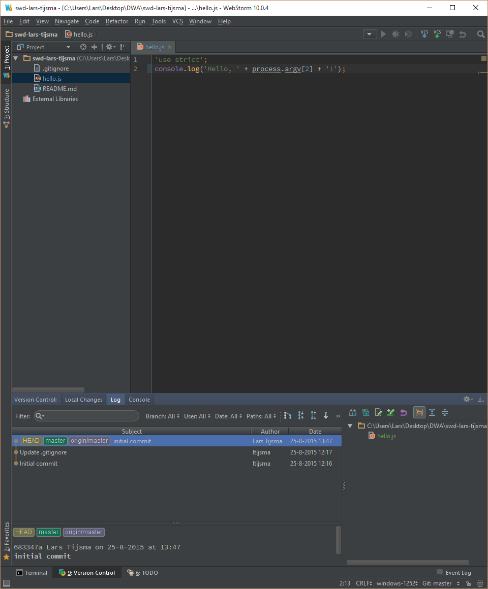
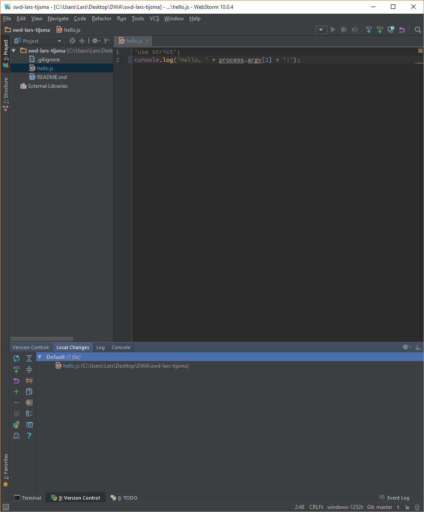

lab 6 Making Changes
Goals
- Learn how to monitor the state of the working directory
Change the “Hello, World” program. 01
It’s time to change our hello program to take an argument from the command line. Change the file to be:
File: hello.js
'use strict';
console.log('Hello, ' + process.argv[2] + '!');
Check the log 02
Now check the tab "Log" and you should see that nothing has changed, because this tab only shows committed changes.
Output:
Check the Local Changes
Check that git noticed your local changes.
Output:

Git knows
that the hello.js file has been modified, but
git has not staged or commited these changes